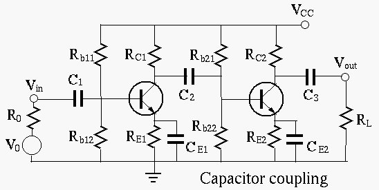
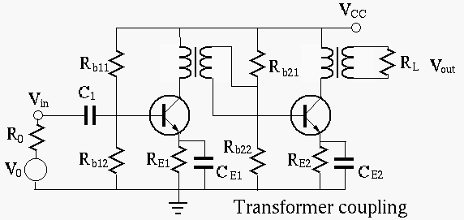
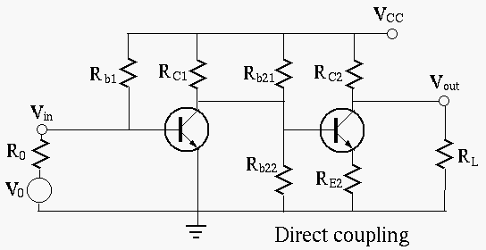

In order to have an amplification gain, multi-stage amplification circuits
are needed. Such a circuit is typically composed of two or more cascaded
transistor amplifiers, coupled in one of three possible ways:
- Capacitor coupling:

- Independent DC operating point;
- AC amplification of high gain if coupling capacitors are
larger enough;
- Cannot amplify DC and low frequency signals;
- Difficult implementation on IC.
- Transformer coupling:

- Independent DC operating point;
- Can achieve maximal power by impedance match;
- Cannot amplify DC and low frequency signals;
- Difficult implementation on IC.
- Direct coupling:

- DC operating point not independent;
- Can amplify both DC and AC signals;
- Easy implementation on IC.